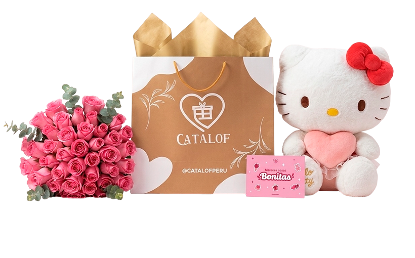
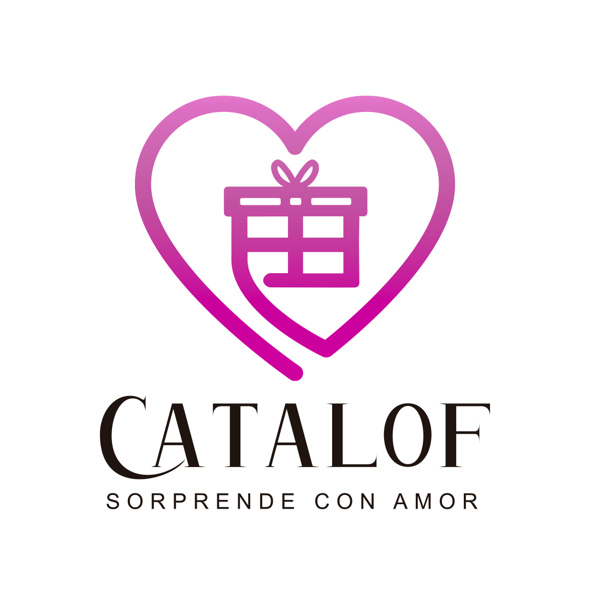
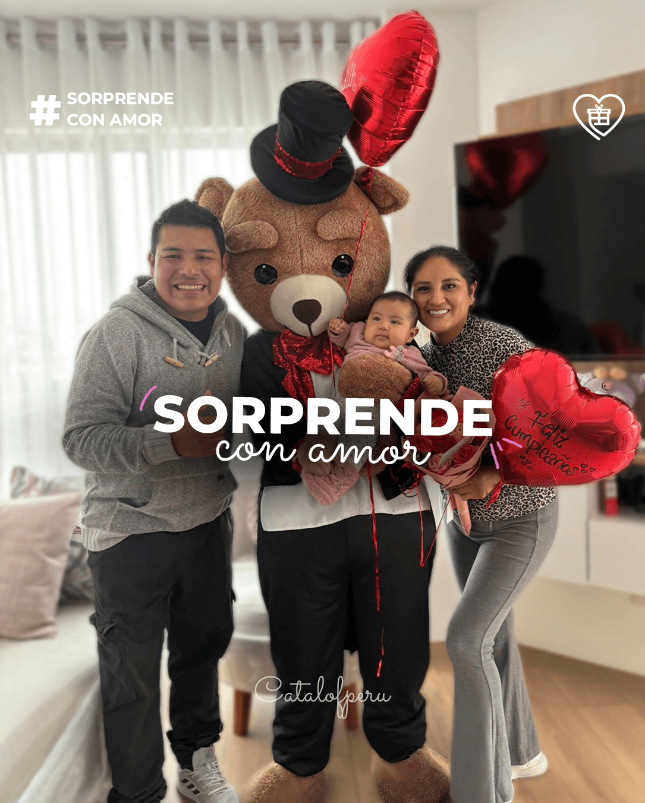
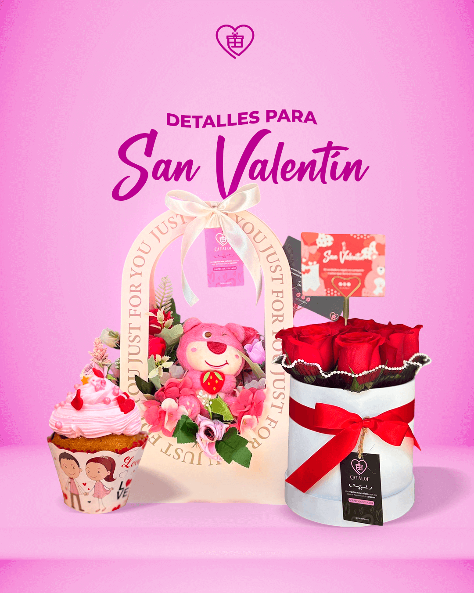
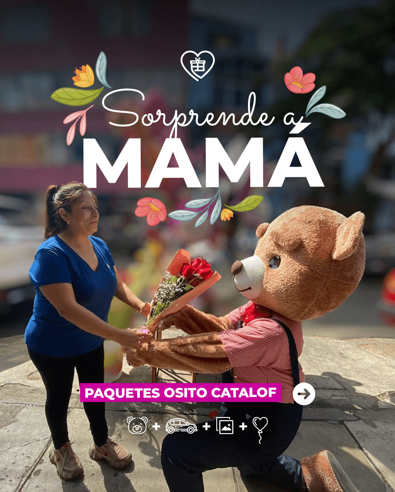
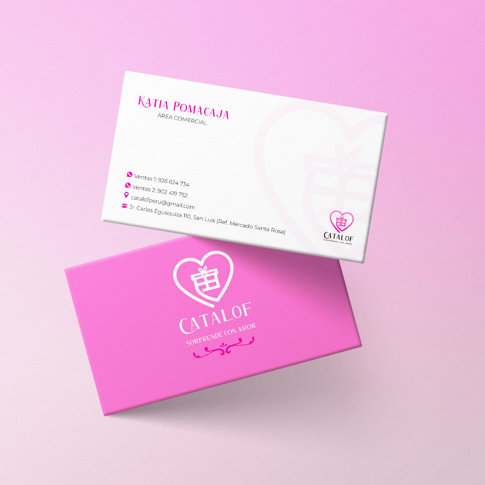
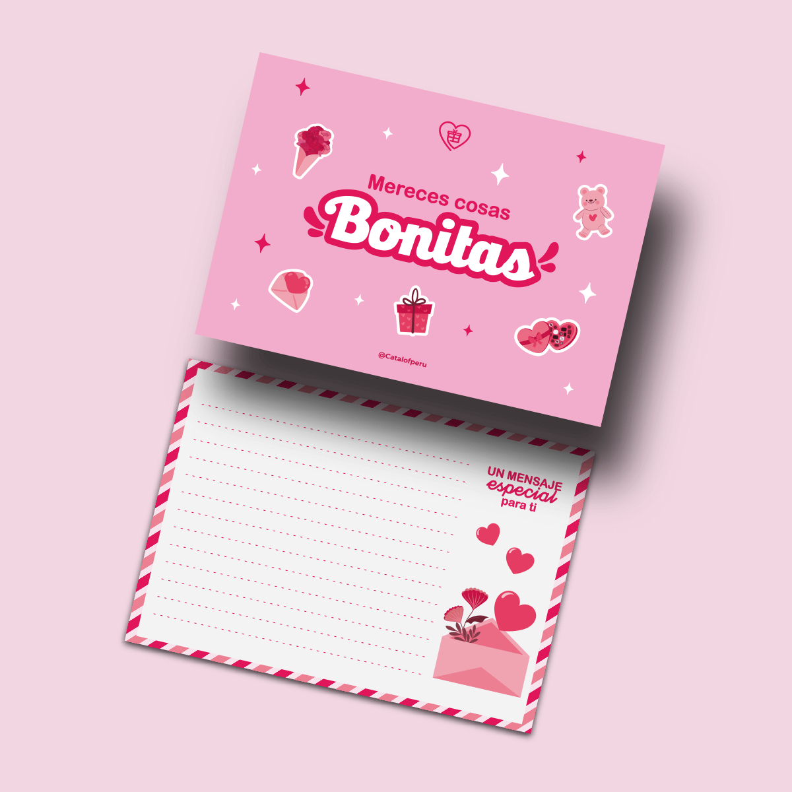

Una tienda de regalos que no comunicaba emoción. La transformamos en una marca cálida, reconocible y llena de amor — desde el logo hasta el último post.

Catalof llegó con un logo genérico en azul y rojo — colores que no conectaban con una tienda de regalos y detalles. No había identidad, no había emoción, no había diferenciación. La marca existía, pero no comunicaba.
Azul y rojo no transmiten calidez ni la emoción de regalar.
Sin personalidad propia ni diferenciación.
No había slogan, tono ni narrativa. La marca no sabía comunicarse.

Antes de tocar algún archivo de diseño, definí la dirección estratégica de la marca: Qué es Catalof, a quién le habla y qué emoción quiere despertar.
Personas que regalan con intención — que buscan algo especial, cargado de significado. Principalmente jóvenes y adultos con sensibilidad por los detalles.
No somos una tienda de regalos genérica. Somos la marca que acompaña los momentos que importan — con calidez, amor y cuidado en cada detalle.
Creé la línea gráfica de Catalof y gestioné campañas de Meta Ads — incluyendo diseño de piezas, segmentación de audiencias y análisis de métricas.
Creé "Sorprende con amor" — tres palabras que resumen la esencia de la marca. Simple, memorable y cargado de emoción.
Cada color fue elegido para transmitir lo que Catalof quería ser: cálido, especial y dinámico. Del rojo y gris frío al fucsia — de una marca sin emoción a una que enamora.
El fucsia comunica energía y modernidad. El rosa transmite ternura y afecto. El marrón aporta calidez y sofisticación. Juntos crean una marca que se siente como un abrazo.
La identidad tomó vida en cada punto de contacto — desde las redes sociales hasta los materiales físicos que acompañan cada regalo.





Catalof pasó de ser una tienda sin identidad a una marca cálida y con una voz propia. El slogan "Sorprende con amor" sigue vigente — la mejor señal de que la identidad resonó.
El cambio de paleta generaron una conexión emocional inmediata.
"Sorprende con amor" sigue usándose años después. Las mejores ideas son simples y cargadas de significado.
Desde el logo hasta la dedicatoria que acompaña el regalo — Todo importa.